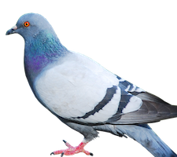
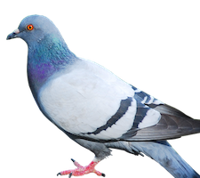

Building Pictures with Racket
Building Pictures with Racket
By Rowan Weir, Daniel Barnas, Allan Schougaard
Introduction
So far, we have focused on building images with pre-existing functions from the 2htdf/image and picturing-programs libraries. We are going to utilize what we have covered previously in this chapter, so review the chapter on graphics first (here). In this chapter, we are going to define functions that accept images as an inputs or return images as their outputs.
The Design Recipe
Designing functions can be complicated, but the process is simplified using a 'design recipe'. A design recipe is a step-by-step process that precisely dictates how to build or define functions. We will be going over each step of the recipe in detail in this chapter.
It is possible to cobble together a function from bits and pieces of code, approaching the problem arbitrarily and forcing the function to work via brute force. Although this haphazard approach to programming may succeed on smaller, less sophisticated functions, functions with this programming "philosophy" at their core are ultimately more difficult to execute.
In the world of software development, projects often require the coordinated cooperation of many people. For this reason, it is important to clarify exactly what a program will be expected to do, and what the inputs are, and what the expected output will be. Therefore a systematic recipe for writing functions is incredibly valuable.
The design recipe also allows for a divide-and-conquer approach, breaking large problems into smaller ones. It also requires you to more completely understand and express different aspects of your function.
Purpose
The first step of writing any function is to clarify and express exactly what you intend to the function to do. That is the concept behind the purpose statement. At first, you will probably want to jump in and begin coding right away. What you may find later on, however, is that you don't fully understand the specifics of what your function is supposed to do, or what components you may need to complete it. The simple step of stating the purpose forces us to confront our understanding of the task at hand. You may also find that putting the problem you're trying to solve into words automatically deepens your understanding of the problem. A good purpose statement succinctly explains what the function will accept as inputs, what it will do, and what it will output, if anything.
Let's try writing some good purpose statements.
For simplicity, in these first examples we are going to use numbers.
Later, we will explore how the same process can apply to graphics.
Here is our challenge:
Create a function that squares any number.
A good way to begin writing purpose statements is to follow this basic format:
; Purpose : Given ..., returns ...
What you are given is your input.
What you return is your expected output.
This may seem overly simplified, but knowing these two components of your function from the very beginning can really help you a great deal later on.
For the purpose statement of this function, we could write the following:
; Purpose : Given any number, returns that number raised to the second power.
Keep in mind that a purpose statement should be fairly short, around 1-2 lines of comments.
If you find yourself needing more than that, it may be a sign that the function you're trying to write could be broken up into smaller functions.
If you cannot clearly and succinctly come up with a purpose statement that fits on at most two line, then it is likely one of two things is true.
Either your understanding of the function is lacking, or the function you are trying to write can be broken down into a few functions of lesser complexity.
overlay or rotate ?
Signature
After you have clarified the the purpose of your function, you need to specify the signature.
A signature is like your toolbox.
It clearly states what datatypes our program will be utilizing.
The signature can also serve as a set of instructions for constructing parts of our function.
When writing your signature, ask: what are we working with?
What data am I starting with, and where do I want to end up?
Let's proceed with our example to get a better idea of what a signature should look like.
; Signature : Number -> Number
Note the arrow seperating our two datatypes.
The presence of the arrow indicates the datatype(s) on the left side are what we expect to input, and the type(s) on the right are what we expect the output to be.
It is another way of saying Given ... -> Returns ...
Note also the capitalization of Number and Number.
Capitalization in the signature denotes a datatype.
Our function accepts a number, and is expected to produce a number as well.
Specifying the signature of a pre-existing function can be a way to better understand what that function does.
For example, the signature of the place-image would be:
; Signature : Image Number Number Image -> Image
ellipse or radial-star ?
Examples
Testing is a vital component of the function design process.
Creating effective examples of your function allows you to determine whether it is working as anticipated.
Tests also serve the very useful purpose of outlining the exact specifications of the
function you plan to write. By demonstrating how you want your function to handle
various inputs, you are defining requirements. A popular term for this is Test-Driven Development (TDD).
It is important to write examples prior to coding your function, because you will continually test your program as you add more to the code.
The function is most commonly used to create tests is check-expect.
The check-expect function recieves the name of your function and test arguments for each datatype you specified in your signature.
It also includes the result you expect from your function, given the inputs provided.
If we were to write the signature for the check-expect function, it might be:
; Signature : your-function datatype(s) expected-result -> boolean
Remember, the number of inputs and the datatypes of the inputs and output should match the signature you wrote for your function.
Since the check-expect function requires the name of your function, this is our first opportunity to come up with a good name for the function we are designing.
A good practice for function naming is to follow the verb-noun form.
This convention includes a verb to denote the action your function is taking, and a noun to denote what is being acted upon.
This function, for example, might be called square-number.
Squaring is the action we are taking, and a number is what we are squaring.
Let's see how check-expect applies to our square-number function.
; Examples :
(check-expect (square-number 3) 9)
The first argument is the square-number function that we are testing and our test input 3.
The last argument is the expected output given the input, in this case 9.
Now, this test alone does not cover all scenarios our function needs to handle.
We need to create additional test cases for all the conditions we expect our function to encounter.
; Examples :
(check-expect (square-number 3) 9)
(check-expect (square-number 0) 0)
(check-expect (square-number -4) 16)
Sometimes when coding a function you may find that the examples you created don't fully
This will ensure that all parts of our function works.
As mentioned earlier, check-expect is the function most commonly used to test examples, but there are others.
It is sufficient for the needs of this chapter, and for most functions that will output images.
If you'd like to learn more about other test functions, be sure to check out the documentation regarding check-within, check-random, and check-satisfied.
Stub
With our test functions written and our desired outputs specified, it's time for the stub.
The stub is like an extremely abbreviated version of what will eventually be our complete function.
Consider it a first draft, whose chief purpose is to get our test functions to execute.
Most of the stub is written like a full function definition.
Begin with the name of the function you're working on as well as any parameters representing the inputs that the function will take.
Remember, these should match the inputs noted in the signature up above.
If we can get the test functions to run, even if they fail, we're still closer to our goal than if the test functions failed to run at all.
For this reason, we will simply include some bogus value instead of a full function body, preferably of the same data type as the function's expected output.
We want to enter a bogus value to eliminate the chance that our tests will pass.
Let's see what a stub would look like for our example:
; Stub :
(define (square-number num) -1)
We know the value -1 will never be an actual result, since a square-number number will never be negative.
Run the stub.
What happens? Is the result what we anticipated?
Template
The next step in the HtDF recipe is the template. You can think of the template as a sort of inventory that you're going to perform before writing the code. It's here that we see what tools we are available to us, and which tools we should expect to use in our function. The template should definitely contain copies of the function inputs. This will remind us to use each of the inputs inside of our function. For simpler functions, listing the inputs along with "..." should be enough for your template. For more complicated functions where you foresee the use of conditional statements, you will want to include a section for each condition you expect to encounter.
In the case of our squared function, there are no foreseeable conditional statements
that we will have to handle. The following template should suffice:
(define (squared num)
... num ...)
This template should remind us that our function should be a function of the input num.
Code
At this point, we have worked our way through all the necessary preparations required for our code. We have succinctly stated the purpose of the function in a clear and understandable way. We have thought through the input and output data types we expect our function to use. We have outlined exactly what our function should output in a few critical test cases. We have done an inventory of the tools we have at our fingertips. We are ready to code.
Because we have already done the work of gathering all of our tools in one place in the template, why not just use the template as a starting point for our code. At this point, you can create a copy of the template below the original template, and comment out the original. With the template copy as the starting point, you can think of coding as filling in the blanks of the template.
Let's look to our squared function as an example:
; Code
(define (squared num)
... num ...)
We begin with our template. We know that our function will be a function of num.
In fact, to square a number is to multiply it by itself.
In code, that would look as follows:
; Code
(define (squared num)
(* num num))
Does our code use the input it was given? Indeed it uses it twice to multiply num
by itself. Let's go ahead and run to see if our function passes the tests.
Stop Sign
Stop signs are ubiquitous, and generally share the same distinctive design regardless of the country they appear in. A red octogon accompanied by white text is the international standard. Many countries use the English word "STOP" on their signs, with others electing to use their local language instead.
In this example, we want to write a function that produces a stop sign.
This function will take a text input, and output the image of a stop sign with the text displayed in white letters.
Create a function that produces the image of a stop sign, with text determined by the user.
Let's apply the design recipe to this problem.
Recall that for the purpose statement, we want to briefly explain what our function will return, and which inputs it will require.
; Purpose : Given a string of text, return the image of a stop sign displaying that text.
The general idea behind our function is pretty simple.
When given a string of text, the function should output a stop sign with that text on it.
Our requirements for this function are made clear by the purpose statement, so we can easily write the signature.
; Signature : String -> Image
This signature gives us a very basic form of how our function will be used, in additon to stating the input and output type(s) we are expecting to use and produce.
The check-expect function that we use to test our functions requires a specific example of an input value and the output value that would result.
This is not generally problematic when writing functions that contain simple datatypes such as numbers or strings, but can be more difficult when our expected output is an image.
One way to utilize the check-expect function in this context is to create the image our function will produce prior to coding the function itself.
This gives you a finished example that you can then test your function against.
For detailed information on how to produce images themselves, refer back to our previous chapter.
As we want to test stop signs in other languages as well, we should create another stop sign with the word "ALTO".
You can find both examples here, if you want to use them in our own testing.
Now that we have our example images, we can write the tests for our function.
We also want to pick a descriptive name, using the verb-noun naming convention.
; Examples :
(check-expect (make-stop-sign "STOP") )
The last argument that check-expect takes is the expected result of the function call.
In this case, we can either copy and paste the image itself, or the code used to create the image.
These are ultimately equivalent so the choice is up to you.
Usually, the more test cases we provide, the better.
We've already created a Spanish language stop sign, so let's make a test featuring that image as well.
; Examples :
(check-expect (make-stop-sign "ALTO")
 )
)
Next, we write the stub.
Remember that the stub mimics a full function definition, with a bogus value in place of code.
; Stub :
(define (make-stop-sign str) "bogus")
The parameter being used here is str , which indicates that our expected input is a string.
; Template :
(define (make-stop-sign str)
(overlay
(text ... ... ...)
(regular-polygon ... ... ... ...)
)
)
; Code :
(define (make-stop-sign str)
(overlay
(text str 75 "white")
(regular-polygon 100 8 "solid" "red")
)
)

Counter-Change
For our next challenge, we will use the recipe to write a counter-change function. A counter-change is when you have two images create a 2-by-2 checkerboard pattern with each image at opposite corners.
As usual, the first step of the recipe is the purpose statement. Remember that the purpose should succinctly describe what the function is going to take as inputs, and what it will output. In this case, our function will take two images as inputs, and will output a single image of the original two images counter-changed. The following purpose statement captures the general idea effectively.
; Purpose : given two images, return a checkerboard of those two images
The next step is to create a signature. The signature should capture the purpose in terms of the data types that our function will take as inputs, and the data type that it will output. In this case, our function will be taking two images, and then outputting a single image based on the two input images.
; Signature : image image -> image
At this point, we will need to create some examples that will specify exactly how we would like our function to behave.
Recall that this step allows us to outline the exact specifications of our function, and to define what constitutes successful output.
The process of creating examples should also serve to provide us with a general outline for how our function will work.
This will help us when it comes time to write code.
; Examples :
With our tests and examples in place, it is time to write the stub.
Recall that the purpose of the stub is simply to get our tests to run, and not to pass.
This will assure us that our function header is written correctly.
; Stub :
(define (counter-change image1 image2) 0)
The next step in the recipe is to construct a template.
The template is where we take inventory of the inputs we have available to us.
Our function should use each of our inputs.
; Template :
(define (counter-change image-1 image-2)
(above
(beside ... ...)
(beside ... ...)
)
)
Now it is time to code our function. The benefit of using the recipe is that we should have already gone through the process of creating an example of the output we want up in the Examples step. You will often find that the function you write is ultimately a generalized version of an example your created.
Check out our code below for the counter-change function.
Did you write it the same way?
; Code :
(define (counter-change image1 image2)
(above
(beside image2 (flip-horizontal image1))
(beside image1 (flip-horizontal image2))
)
)


Bulls-Eye
For our next example, we will create a function that takes two colors as string inputs, and returns a dart-board of concentric circles, with the colors of the circle alternating. The dart-board should have a radius of 100 pixels, and each concentric circle should have a radius that is 10 pixels less than the previous circle.
As usual, we begin with our purpose.
This will help us make sure that we know how our function should behave.
; Purpose : given two colors, return an image of a bulls-eye comprised of those colors
Our purpose statement should have hopefully made it clear that our function will need two colors as inputs.
As far as data types are concerned, colors are usually contained in strings.
For clarity, we can include the word "color" in parentheses so we know what the string inputs represent.
The output of our function will be an image.
; Signature : string (color) string (color) -> image
; Examples :
With our examples written, we are ready to create the function header and check if the examples are able to run (and fail, as expected). This is the role of the stub. It is in the stub that we will name the function as well as the parameters that it will take.
Try running with the stub below.
The examples should execute successfully, even though our function will fail.
The stub outputs a 0, which is not quite the dart-board we are looking for.
; Stub :
(define (bulls-eye color1 color2) 0)
With the stub successfully executing when we click run, we are ready to create a template of our function. Go ahead and comment out the stub, and copy the function header we created for the stub. It will now serve as our template's function header.
Remember that the body of the template should serve to remind us that we should use each of the inputs inside of our function.
; Template :
(define (bulls-eye color-1 color-2)
(overlay
(circle ... ...)
(circle ... ...)
)
)
With our due diligence out of the way, we can finally begin to code.
Using the examples we created above, we can create a function that works similarly, but is generalized for any color choices.
; Code :
(define (bulls-eye color1 color2)
(overlay
(circle 10 "solid" color1)
(circle 20 "solid" color2)
(circle 30 "solid" color1)
(circle 40 "solid" color2)
(circle 50 "solid" color1)
(circle 60 "solid" color2)
(circle 70 "solid" color1)
(circle 80 "solid" color2)
(circle 90 "solid" color1)
(circle 100 "solid" color2)
)
)
overlay with beside?
How about above?


Pinwheel
For the next challenge, write a function that takes an image, and creates a "pinwheel"of four copies of that image rotated about a corner of the original image.
As usual, the first step in the recipe is to summarize the purpose of our function.
Based on the description of the challenge, our function will take one image, and return another image based on the original image.
Let's see if we can capture that idea in a single sentence.
; Purpose : given a shape or image, return a 'pinwheel' comprised of that image
The signature for this function should reflect that the function will take one image and return another image. Keep in mind that even though the output image will consist of four copies of the original image, it will still be a single image.
; Signature : image -> image
Now we must perform the critical step of creating examples of successful outputs of our function. To see how we created our examples, click here.
; Examples :
For the stub, we will create a header for our function and test that it works. Remember that our function will only take a single image as an argument. We will have our stub output 0 to guarantee that our tests fail. All we want to verify is that they successfully run.
; Stub :
(define (pinwheel image) 0)
We are almost ready to code, but first we need to perform an inventory of what we have to work with.
This is the role of the template.
A properly constructed template should remind us that our function will use our input(s),
in this case image.
; Template :
(define (pinwheel image)
(rotate ...
(above
(beside
(rotate ... ...)
(rotate ... ...)
)
(beside
(rotate ... ...)
(rotate ... ...)
)
)
)
)
It's time to finally write our function. Since we have done the hard work of creating examples during the Examples step of the recipe, we have a general idea for how our function should work. You will notice that our function is very similar to the example we created.
; Code :
(define (pinwheel image)
(rotate -45
(above
(beside
(rotate 45 image)
(rotate -45 image)
)
(beside
(rotate -45 image)
(rotate 45 image)
)
)
)
)


Business Card
; Purpose : given a name, a job, an identifying image, and a logo, return a business card.
; Signature : image image text text -> image
; Examples :
; Stub :
(define (business-card id logo name job) 0)
; Template :
(define (business-card id logo name job)
(overlay/align/offset ... ...
(beside ...
(above
(text ... ... ...)
(text ... ... ...)
)
)
... ...
)
)
; Code :
(define (business-card id logo name job)
(overlay/align/offset "right" "top"
logo
5 -10
(overlay/offset
(beside
(place-image
id
115 100
(rectangle 175 225 "solid" "white")
)
(above
(text name 36 "black")
(text/font job 24 "dimgray" #f 'roman 'italic 'normal #f)
)
)
40 0
(rectangle 500 250 "solid" "whitesmoke")
)
)
)

 

Clock Face
As our last challenge in this chapter, we will attempt to create a clock face. In our particular implementation, the numbers 1-12 on the clock-face should be oriented relative to the center of the dial, with 12 at the top. This challenge will require us to do more than simply place images a certain way. Though we could write one long function that handles every facet of this challenge, we will instead do our best to divide this challenge into several smaller challenges that we will then handle separately. This approach to programming is called "divide and conquer", and you will recall that it was one of our motivations for using the HtDF recipe to begin with. Large problems are often dealt with much more effectively if they are broken down into several smaller problems.
To begin, let's create the blank clock-face. To avoid having to re-create it each time we would like to draw the clock face, we can define a constant to hold the image of our blank clock-face.
(define clock-face
(circle 130 "solid" "white")
)
Here we have define the constant clock-face to bind to the image of a
white circle with a radius of 130 pixels. This is our blank clock face on which
we'll place our numbers.
Now that we have our clock face, it would be nice to place some numbers on it.
However, we do not currently have any images of numbers that we could use.
Remember, Number is a data type in Racket that is different than the Image
data type.
If we would like to have numbers on our clock face, we need to have images of the numbers
that we can position on our clock face. This leads us to the first part of our challenge.
We need a function that takes a number and returns an image of that number.
As with any function, we begin by concisely stating our purpose:
; Purpose : Given a number, return an image of that number.
As usual, next comes the signature. This will serve as a guide to anyone who would like to use our function. We can also fall back to the signature if we lose our way.
; Signature : String -> Image
Now we will define some examples of how we expect our function to work. Click here to see the code that was used to create the example image. We will want our function to output an image for any number entered.
; Examples :
(check-expect (digit "12")  )
)
With our examples defined, we have now defined what success looks like for our function. The next step in the recipe is to see if we can get the examples to execute. This will at least assure us that our function header is correct.
; Stub :
(define (digit num) 0)
With our function header executing correctly, we are almost ready to begin coding our function.
First, we need to write our function template.
This will act as an inventory so that we know the general structure our function should follow.
Our function should definitely use the num argument, so we should include it in the body
of our template.
; Template :
(define (digit num)
(
... num ...
)
)
We are now ready to code our first function in this challenge. Remember that our function should take a number input, and somehow convert it to an image. Hint: you may need to convert your number to a string first.
; Code :
(define (digit num)
(text/font num 30 "black" #f 'swiss 'normal 'bold #f)
)
Congratulations! We now have a function that takes a number, and outputs an image of that number. This is a big step, but we're not there yet. We now need to somehow arrange the numbers 1 through 12 around the clock face.
There are many possible ways we could go about this. The method we will use here will have us placing a number, starting with 1, at the top of the clock face, and then rotating the clock face some amount, and then placing the next number at the top of the face. Repeating this process for all 12 numbers should produce a fully-numbered clock face.
As always, we want to divide-and-conquer this task if at all possible. Let's start with the simpler task of placing an image (in our case, of a number) on the top of the clock face, and then rotating it by the appropriate amount.
The first thing to figure out is how much we would like to rotate the clock face, once the number is placed. A quick refresher of geometry will remind us that a circle has 360 degrees. We would like to place 12 numbers at approximately equal intervals, so the clock face should rotate 30 degrees between the placement of each number.
At this point, we can write the purpose of our next function.
; Purpose : Given a number and an image of a clock face,
return an image of the number overlayed on the clock face, both rotated +30 degrees.
The following signature should reflect the data types that our function will input and output, based on the purpose statement.
; Signature : Number Image -> Image
Now let's come up with some examples. Something to keep in mind is that our function returns an image of a clock face with a number on it. This new image could now be used as the face input for the function when we want to place the number 2. Can you see how this might be used to fill up our clock face with all the numbers? You can see the code we used here.
; Examples :
(check-expect (place-turn 12 clock-face)  )
)
Let's see if we can get our test to run. Make sure the inputs match the signature.
; Stub :
(define (place-turn str face) 0)
Great! We got our examples to run. We're almost there.
; Template :
(define (place-turn str face)
(rotate ...
(overlay/align ... ... ... ...)
)
)
At this point, we're ready to code our function.
Do you see how the function digit has helped us keep our code clean?
; Code :
(define (place-turn str face)
(rotate 30
(overlay/align
"middle" "top"
(digit str)
face
)
)
)
Very well done!
Our functions our coming together nicely, and we are just a few steps away from
creating a fully numbered clock face.
At this point, we have a function that takes a number and converts it into an Image.
We have another function that takes a number and a clock face, places the number
on the top of the clock face, and returns the clock face rotated 30 degrees to make room for
the next number.
Now we just need a function that places each number 1 through 12 and returns
an Image of the fully-numbered clock face.
We have already seen how, after we place the number 1 on the clock face,
we can feed the new clock face directly into our function again to place the number 2.
Our new function will need to go through and place each number 1 through 12 in a similar way.
You may recall that there is a certain equivalence between images and functions that
return the data type Image.
If a function takes and Image as an argument, we can cut and paste the actual image
graphic into the code, or we can input a function that returns an Image.
We'll see how this feature could prove to be very useful.
The purpose of our last function will be to take a clock face and populate it with numbers.
; Purpose : Given a clock face image, return an image of the numbers 1-12 placed on the clock face.
This almost seems too simple! The only input is the image of the clock face. You might be tempted to think that we need to include a list of the numbers we want on the clock face. But we already know which numbers we want (1-12). There really is no additional input that we need to include besides the clock face itself.
; Signature : Image -> Image
The signature reflects this simplicity nicely.
; Examples :
(check-expect (place-numbers clock-face)  )
)
Let's get our examples to run with the stub.
; Stub :
(define (place-numbers face) 0)
; Template :
(define (place-numbers face)
(rotate ...
(foldl ... ...)
)
)
; Code :
(define (place-numbers face)
(rotate -30
(foldl place-turn face
'("1" "2" "3" "4" "5" "6" "7" "8" "9" "10" "11" "12")
)
)
)
; Code :
(define (clock face)
(overlay
(place-numbers face)
(circle 150 "outline" "black")
)
)